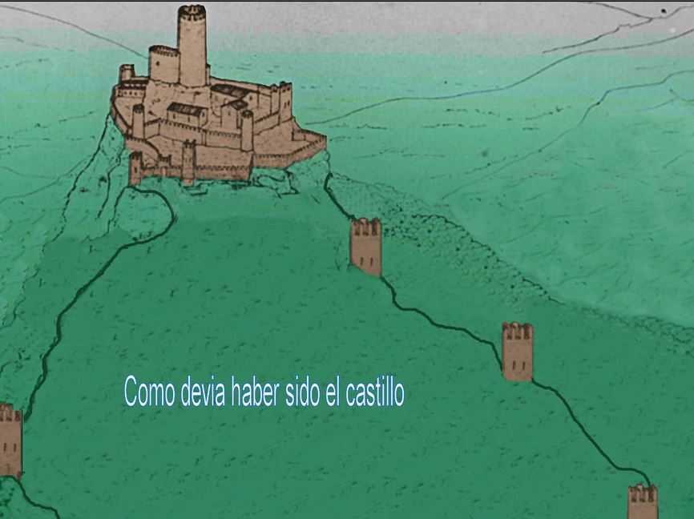

95 Sant Andreu de la Barca-Castell y font de Sant Jaume

Bueno esta ruta era para ver y aprender algo más de nuestros monumentos, pero como ya es sabido se dejan hasta que quedan ruinas, donde después se dirán que se gastan algún millón de euros en la rehabilitación, pero otra mentira más de los políticos. He llegado a pensar porque esta gente incívica y vandálica no se les castiga enviándolos a limpiar estas zonas, será porque no los políticos no podrían robar a nada, que cada uno piense lo que quiera, lo que es una lastima es como tenemos nuestro patrimonio.
comenzamos en la calle del Jardín del Pont cruce con la calle Creu de l'Aregall, Allí en el cruce cogemos hacia atrás por la calle que vinimos y cogemos el camino de la izquierda que está en la misma curva, seguiremos por el que es un camino ancho
hasta llegar a un cruce donde hay un montículo de tierra con una cadena que divide los caminos, pasamos la cadena y cogemos por la derecha, pero ojo allí hay un camino ancho y un sendero por la derecha , pues cogemos por el sendero, seguiremos por él aunque ...
Resumen
- Distancia: 5.83km
- Elevación: 1076f
- Valoración: 4.9